packages <- c( "randomForest","tree","dplyr", "tidyverse", "plotly", "psych", "ISLR", "leaps", "reshape2","readr")
for (package in packages) {
if (!(package %in% installed.packages())) {
install.packages(package, dependencies = TRUE)
}
}
# Load libraries
suppressMessages({library(dplyr)
library(tidyverse)
library(plotly)
library(psych)
library(ISLR)
library(leaps)
library(reshape2)
library(readr)
library(tree)
library(randomForest)
library(caret)})FINAL PROJECT CODE
url <- "https://raw.githubusercontent.com/KyleWandel/STAT-515-Final-Project/main/breast-cancer-wisconsin.csv"
df <- read.table(url, header = TRUE, sep = ",")
str(df)'data.frame': 699 obs. of 11 variables:
$ id : int 1000025 1002945 1015425 1016277 1017023 1017122 1018099 1018561 1033078 1033078 ...
$ clumpthickness : int 5 5 3 6 4 8 1 2 2 4 ...
$ uniformcellsize : int 1 4 1 8 1 10 1 1 1 2 ...
$ uniformcellshape: int 1 4 1 8 1 10 1 2 1 1 ...
$ margadhesion : int 1 5 1 1 3 8 1 1 1 1 ...
$ epithelial : int 2 7 2 3 2 7 2 2 2 2 ...
$ barenuclei : chr "1" "10" "2" "4" ...
$ blandchromatin : int 3 3 3 3 3 9 3 3 1 2 ...
$ normalnucleoli : int 1 2 1 7 1 7 1 1 1 1 ...
$ mitoses : int 1 1 1 1 1 1 1 1 5 1 ...
$ benormal : int 2 2 2 2 2 4 2 2 2 2 ...To make the dataset ready for analysis we removed the ID column, checked and removed all rows with missing data changed he response variable values to malignant (4) = 1 and benign (2) = 0.
After cleaning the dataset, we looked at a summary statistics for each variable. For our sample there are 444 records that are identified as not being malignant (=0) and 239 records that are identified as being malignant (=1).
# remove ID column
df <- subset(df, select = -id)
# Change column type
df$barenuclei <- as.integer(df$barenuclei) Warning: NAs introduced by coercion# Look for missing values
colSums(is.na(df)) clumpthickness uniformcellsize uniformcellshape margadhesion
0 0 0 0
epithelial barenuclei blandchromatin normalnucleoli
0 16 0 0
mitoses benormal
0 0 # omit missing values
df_clean <- na.omit(df)
str(df_clean) 'data.frame': 683 obs. of 10 variables:
$ clumpthickness : int 5 5 3 6 4 8 1 2 2 4 ...
$ uniformcellsize : int 1 4 1 8 1 10 1 1 1 2 ...
$ uniformcellshape: int 1 4 1 8 1 10 1 2 1 1 ...
$ margadhesion : int 1 5 1 1 3 8 1 1 1 1 ...
$ epithelial : int 2 7 2 3 2 7 2 2 2 2 ...
$ barenuclei : int 1 10 2 4 1 10 10 1 1 1 ...
$ blandchromatin : int 3 3 3 3 3 9 3 3 1 2 ...
$ normalnucleoli : int 1 2 1 7 1 7 1 1 1 1 ...
$ mitoses : int 1 1 1 1 1 1 1 1 5 1 ...
$ benormal : int 2 2 2 2 2 4 2 2 2 2 ...
- attr(*, "na.action")= 'omit' Named int [1:16] 24 41 140 146 159 165 236 250 276 293 ...
..- attr(*, "names")= chr [1:16] "24" "41" "140" "146" ...# Change response variable to 1 and 0
df_clean$benormal <- ifelse(df_clean$benormal == 4, 1, ifelse(df_clean$benormal == 2, 0, df_clean$benormal))
summary(df_clean) clumpthickness uniformcellsize uniformcellshape margadhesion
Min. : 1.000 Min. : 1.000 Min. : 1.000 Min. : 1.00
1st Qu.: 2.000 1st Qu.: 1.000 1st Qu.: 1.000 1st Qu.: 1.00
Median : 4.000 Median : 1.000 Median : 1.000 Median : 1.00
Mean : 4.442 Mean : 3.151 Mean : 3.215 Mean : 2.83
3rd Qu.: 6.000 3rd Qu.: 5.000 3rd Qu.: 5.000 3rd Qu.: 4.00
Max. :10.000 Max. :10.000 Max. :10.000 Max. :10.00
epithelial barenuclei blandchromatin normalnucleoli
Min. : 1.000 Min. : 1.000 Min. : 1.000 Min. : 1.00
1st Qu.: 2.000 1st Qu.: 1.000 1st Qu.: 2.000 1st Qu.: 1.00
Median : 2.000 Median : 1.000 Median : 3.000 Median : 1.00
Mean : 3.234 Mean : 3.545 Mean : 3.445 Mean : 2.87
3rd Qu.: 4.000 3rd Qu.: 6.000 3rd Qu.: 5.000 3rd Qu.: 4.00
Max. :10.000 Max. :10.000 Max. :10.000 Max. :10.00
mitoses benormal
Min. : 1.000 Min. :0.0000
1st Qu.: 1.000 1st Qu.:0.0000
Median : 1.000 Median :0.0000
Mean : 1.603 Mean :0.3499
3rd Qu.: 1.000 3rd Qu.:1.0000
Max. :10.000 Max. :1.0000 table(df_clean$benormal)
0 1
444 239 We next wanted to identify if there were any patterns amongst the predictor variables in the dataset. First we looked at the correlations, histrograms and scatterplots of the variables using the pairs.panel() function.
pairs.panels(df_clean)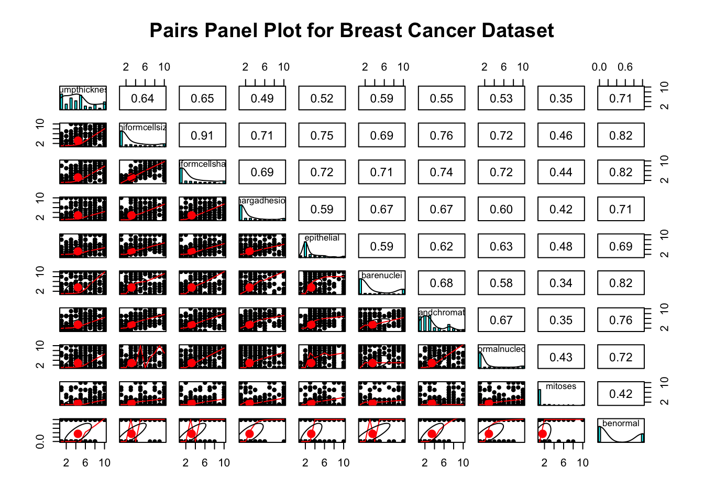
Principal Component Analysis
We first took a look at the mean and variances of the variables in the dataset to see if the variables should be scaled or not. Below are the means an variances of the variables:
PCA_df <- df_clean[, -ncol(df_clean)]
states=row.names(PCA_df)
apply(PCA_df, 2, mean) clumpthickness uniformcellsize uniformcellshape margadhesion
4.442167 3.150805 3.215227 2.830161
epithelial barenuclei blandchromatin normalnucleoli
3.234261 3.544656 3.445095 2.869693
mitoses
1.603221 apply(PCA_df, 2, var) clumpthickness uniformcellsize uniformcellshape margadhesion
7.956694 9.395113 8.931615 8.205717
epithelial barenuclei blandchromatin normalnucleoli
4.942109 13.277695 6.001013 9.318772
mitoses
3.002160 apply(PCA_df, 2, sd) clumpthickness uniformcellsize uniformcellshape margadhesion
2.820761 3.065145 2.988581 2.864562
epithelial barenuclei blandchromatin normalnucleoli
2.223085 3.643857 2.449697 3.052666
mitoses
1.732674 # There is difference in the mean and variance, so we do should scale/standardize the variables.After running a PCA analysis found that most of the variables are grouped indicating that there are similar observations based on the variable values. There are not too many outliers to indicate any unusual observations.
# Calculate the principal components
pr.out=prcomp(PCA_df, scale=TRUE)
pr.out$rotation=-pr.out$rotation
pr.out$x=-pr.out$x
biplot(pr.out, scale=0, main = "Biplot of PCA Results", cex =0.7)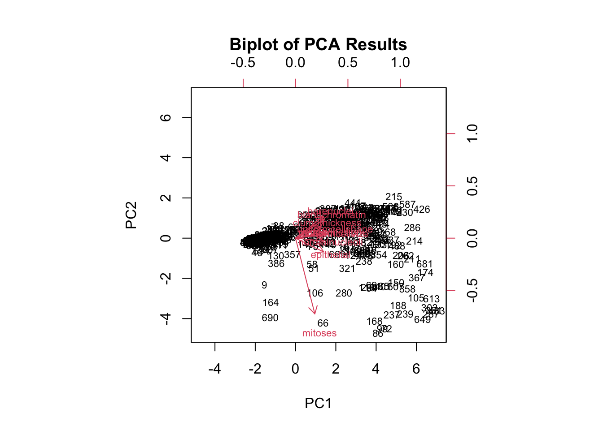
The following graph is the scree plot for the PCA which is used to provide a simple yet effective way to see balance and the trade-off between retaining information and reducing dimensionality in your data.
# Scree plot
(pr.var=pr.out$sdev^2) #variance of each PC[1] 5.89949935 0.77594689 0.53925224 0.45962745 0.38027583 0.30187645 0.29440271
[8] 0.26073586 0.08838322pve=pr.var/sum(pr.var)
pve[1] 0.655499928 0.086216321 0.059916916 0.051069717 0.042252870 0.033541828
[7] 0.032711413 0.028970651 0.009820358par(mfrow =c(1,2))
plot(pve, main = "Scree Plot for Variance Explained",
xlab="Principal Component",
ylab="Proportion of Variance Explained", ylim=c(0,1),type='b')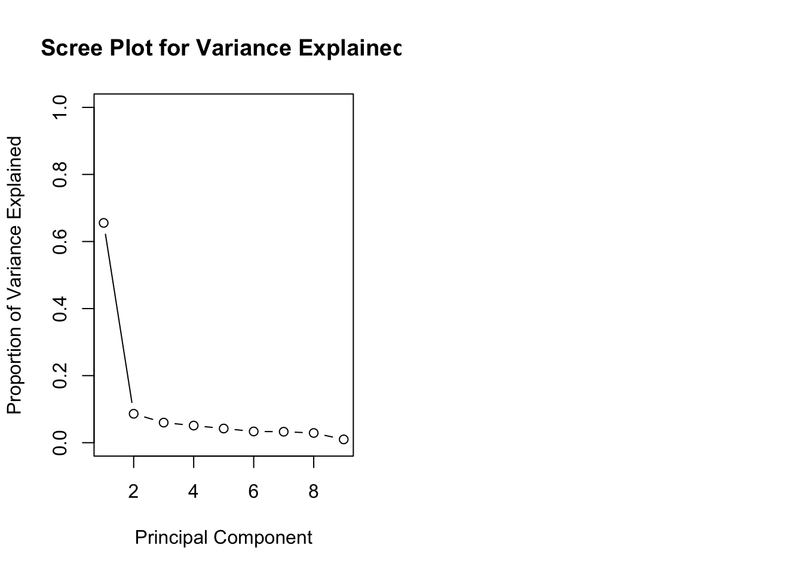
The following graph shows cumulative proportion of variance that each principal components adds.
plot(cumsum(pve), main = "Scree Plot for Cumulative Variance Explained",
xlab="Principal Component",
ylab="Cumulative Proportion of Variance Explained",
ylim=c(0,1),type='b')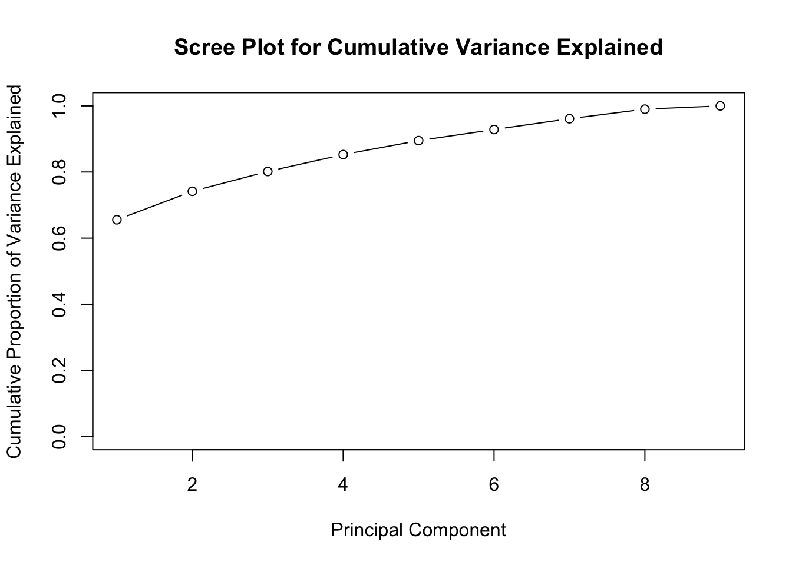
Logistic Regression
For the first model we used the cleaned dataset and all of the variables.
model_1 <- glm(benormal ~ ., data = df_clean, family = binomial)
summary(model_1)
Call:
glm(formula = benormal ~ ., family = binomial, data = df_clean)
Coefficients:
Estimate Std. Error z value Pr(>|z|)
(Intercept) -10.10394 1.17488 -8.600 < 2e-16 ***
clumpthickness 0.53501 0.14202 3.767 0.000165 ***
uniformcellsize -0.00628 0.20908 -0.030 0.976039
uniformcellshape 0.32271 0.23060 1.399 0.161688
margadhesion 0.33064 0.12345 2.678 0.007400 **
epithelial 0.09663 0.15659 0.617 0.537159
barenuclei 0.38303 0.09384 4.082 4.47e-05 ***
blandchromatin 0.44719 0.17138 2.609 0.009073 **
normalnucleoli 0.21303 0.11287 1.887 0.059115 .
mitoses 0.53484 0.32877 1.627 0.103788
---
Signif. codes: 0 '***' 0.001 '**' 0.01 '*' 0.05 '.' 0.1 ' ' 1
(Dispersion parameter for binomial family taken to be 1)
Null deviance: 884.35 on 682 degrees of freedom
Residual deviance: 102.89 on 673 degrees of freedom
AIC: 122.89
Number of Fisher Scoring iterations: 8par(mfrow = c(2, 2))
plot(model_1)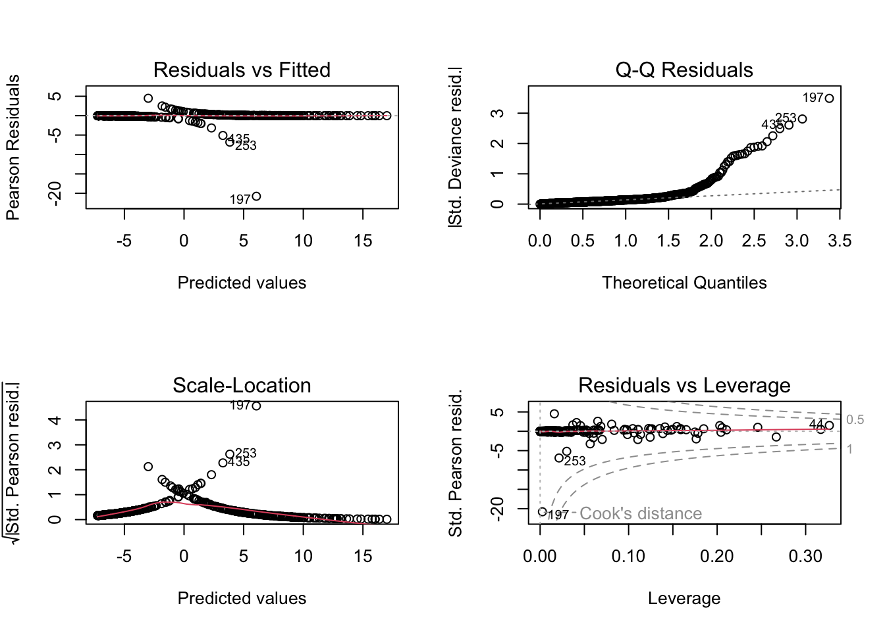
Next, we wanted to create a new model after logging our variables.
variables_to_log <- c("mitoses", "normalnucleoli", "blandchromatin", "epithelial", "margadhesion", "uniformcellshape", "uniformcellsize","clumpthickness")
df_log <- df_clean
df_log[variables_to_log] <- lapply(df_log[variables_to_log], log)
model_2 <- glm(benormal ~ ., data = df_log, family = binomial)
summary(model_2)
Call:
glm(formula = benormal ~ ., family = binomial, data = df_log)
Coefficients:
Estimate Std. Error z value Pr(>|z|)
(Intercept) -9.31304 1.25953 -7.394 1.42e-13 ***
clumpthickness 1.80864 0.59805 3.024 0.00249 **
uniformcellsize 0.50056 0.66380 0.754 0.45080
uniformcellshape 1.26038 0.74379 1.695 0.09016 .
margadhesion 0.71750 0.39504 1.816 0.06933 .
epithelial -0.04541 0.63630 -0.071 0.94310
barenuclei 0.36117 0.09149 3.948 7.89e-05 ***
blandchromatin 1.49565 0.61321 2.439 0.01473 *
normalnucleoli 0.48867 0.35560 1.374 0.16938
mitoses 1.34541 0.74040 1.817 0.06920 .
---
Signif. codes: 0 '***' 0.001 '**' 0.01 '*' 0.05 '.' 0.1 ' ' 1
(Dispersion parameter for binomial family taken to be 1)
Null deviance: 884.35 on 682 degrees of freedom
Residual deviance: 107.02 on 673 degrees of freedom
AIC: 127.02
Number of Fisher Scoring iterations: 8par(mfrow = c(2, 2))
plot(model_2)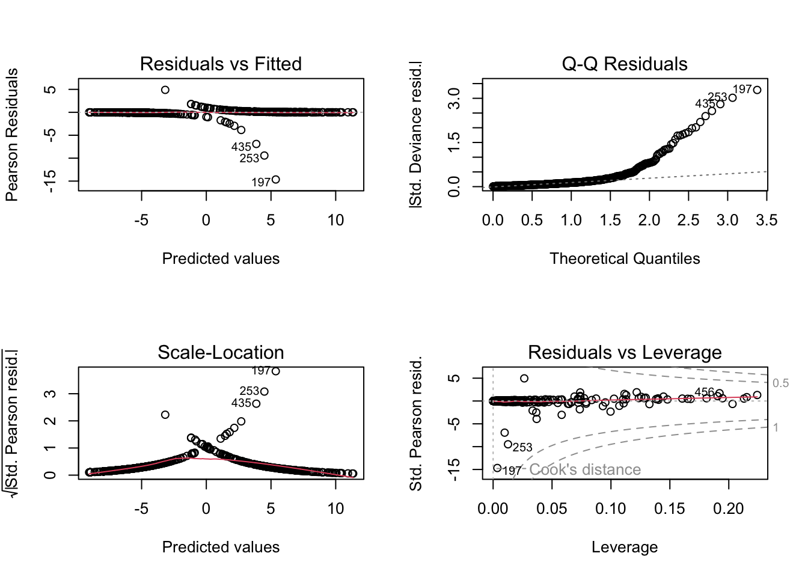
Based on the AIC of these two models, the non-logged model performed better. Now lets try and simplify the model.
model_3 <- glm(benormal ~ clumpthickness + margadhesion + barenuclei + blandchromatin, data = df_clean, family = binomial)
summary(model_3)
Call:
glm(formula = benormal ~ clumpthickness + margadhesion + barenuclei +
blandchromatin, family = binomial, data = df_clean)
Coefficients:
Estimate Std. Error z value Pr(>|z|)
(Intercept) -10.11370 1.03264 -9.794 < 2e-16 ***
clumpthickness 0.81166 0.12585 6.450 1.12e-10 ***
margadhesion 0.43412 0.11403 3.807 0.000141 ***
barenuclei 0.48136 0.08816 5.460 4.76e-08 ***
blandchromatin 0.70154 0.15196 4.616 3.90e-06 ***
---
Signif. codes: 0 '***' 0.001 '**' 0.01 '*' 0.05 '.' 0.1 ' ' 1
(Dispersion parameter for binomial family taken to be 1)
Null deviance: 884.35 on 682 degrees of freedom
Residual deviance: 125.77 on 678 degrees of freedom
AIC: 135.77
Number of Fisher Scoring iterations: 8model_3
Call: glm(formula = benormal ~ clumpthickness + margadhesion + barenuclei +
blandchromatin, family = binomial, data = df_clean)
Coefficients:
(Intercept) clumpthickness margadhesion barenuclei blandchromatin
-10.1137 0.8117 0.4341 0.4814 0.7015
Degrees of Freedom: 682 Total (i.e. Null); 678 Residual
Null Deviance: 884.4
Residual Deviance: 125.8 AIC: 135.8anova(model_1, model_3, test = "Chisq") Analysis of Deviance Table
Model 1: benormal ~ clumpthickness + uniformcellsize + uniformcellshape +
margadhesion + epithelial + barenuclei + blandchromatin +
normalnucleoli + mitoses
Model 2: benormal ~ clumpthickness + margadhesion + barenuclei + blandchromatin
Resid. Df Resid. Dev Df Deviance Pr(>Chi)
1 673 102.89
2 678 125.78 -5 -22.886 0.0003549 ***
---
Signif. codes: 0 '***' 0.001 '**' 0.01 '*' 0.05 '.' 0.1 ' ' 1Using model_1 as the final model, lets see how accurate it is for prediction.
glm.probs=predict(model_1,type="response")
glm.probs[1:10] 1 2 3 4 5 6
0.016046581 0.908808622 0.008137623 0.760934919 0.018166848 0.999973622
7 8 9 10
0.056844170 0.004503358 0.011249056 0.006032371 glm.pred=rep(0,nrow(df_clean))
glm.pred[glm.probs>.5]=1
glm.pred=as.factor(glm.pred)
df_clean$benormal=as.factor(df_clean$benormal)
cm = table(glm.pred,df_clean$benormal)
print(cm)
glm.pred 0 1
0 434 11
1 10 228Decision Tree and Random Forest Modeling
First, we looked at a decision tree model to determine the best spilt for node splitting. We did this by splitting the data into two sets, training and testing to train the model and then test its accuracy.
df_clean$benormal=as.integer(df_clean$benormal)
set.seed(2)
train = sample(1:nrow(df_clean), nrow(df_clean)/2)
tree.df_clean=tree(benormal~.,df_clean,subset=train)
plot(tree.df_clean, )
title("Breast Cancer Decision Tree")
text(tree.df_clean,pretty=0)
summary(tree.df_clean)
Regression tree:
tree(formula = benormal ~ ., data = df_clean, subset = train)
Variables actually used in tree construction:
[1] "uniformcellshape" "clumpthickness" "barenuclei" "epithelial"
Number of terminal nodes: 5
Residual mean deviance: 0.02505 = 8.416 / 336
Distribution of residuals:
Min. 1st Qu. Median Mean 3rd Qu. Max.
-0.95240 -0.00495 -0.00495 0.00000 0.04762 0.99500 cv.df_clean=cv.tree(tree.df_clean)
plot(cv.df_clean$size,cv.df_clean$dev,type='b')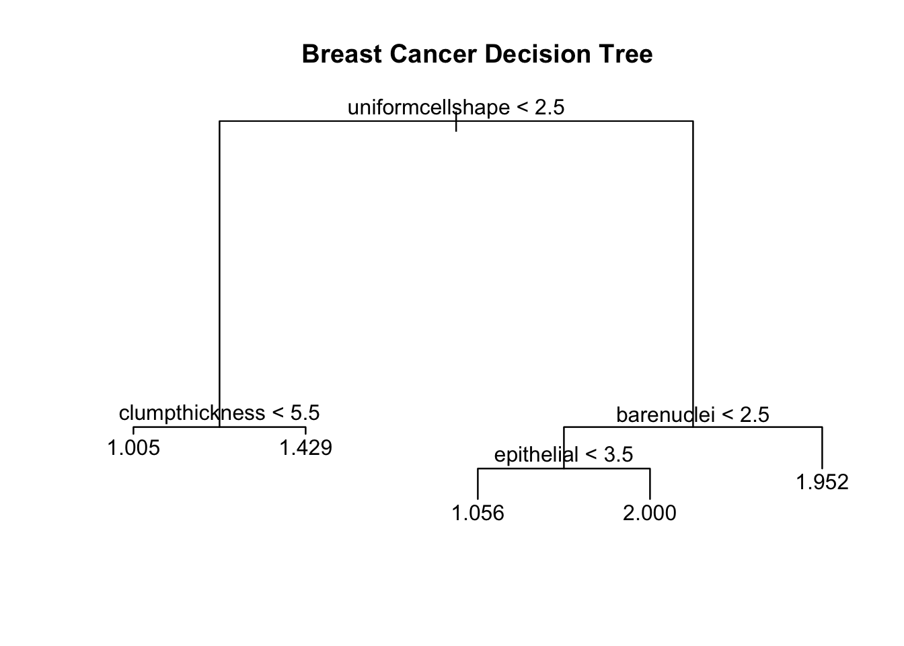
After pruning the tree and using 3 nodes to spilt the data below is the resulting model.
prune.df_clean=prune.tree(tree.df_clean,best=3)
summary(prune.df_clean)
Regression tree:
snip.tree(tree = tree.df_clean, nodes = c(2L, 6L))
Variables actually used in tree construction:
[1] "uniformcellshape" "barenuclei"
Number of terminal nodes: 3
Residual mean deviance: 0.04432 = 14.98 / 338
Distribution of residuals:
Min. 1st Qu. Median Mean 3rd Qu. Max.
-0.95240 -0.01914 -0.01914 0.00000 0.04762 0.98090 plot(prune.df_clean)
title("Breast Cancer Decision Tree")
text(prune.df_clean,pretty=0)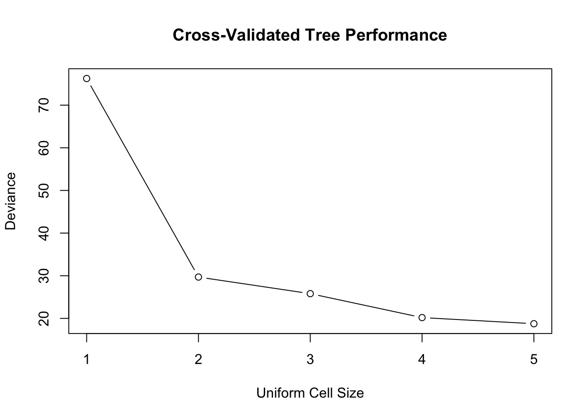
This is another strong model with a MSE of just .039. When comparing these models, their resdidual variances are very similar, as such we would likely choose the more simple model.
Lets now use a random forest model to prevent any potential overfitting of our decision tree model.
df_clean <- na.omit(df)
df_clean$benormal <- ifelse(df_clean$benormal == 4, 1, ifelse(df_clean$benormal == 2, 0, df_clean$benormal))
cancer_rf=randomForest(benormal~.,data=df_clean,subset=train,mtry=3,importance=TRUE)Warning in randomForest.default(m, y, ...): The response has five or fewer
unique values. Are you sure you want to do regression?yhat.rf = predict(cancer_rf,newdata=df_clean[-train,])
df_clean.test=df_clean[-train,"benormal"]#testing y values
mean((yhat.rf-df_clean.test)^2) #test set MSE[1] 0.02856504By creating a random forest model we were able to reduce the MSE from .039 to .026
plot(cancer_rf,
main = "Random Forest Plot for Error Rate vs Trees")
grid()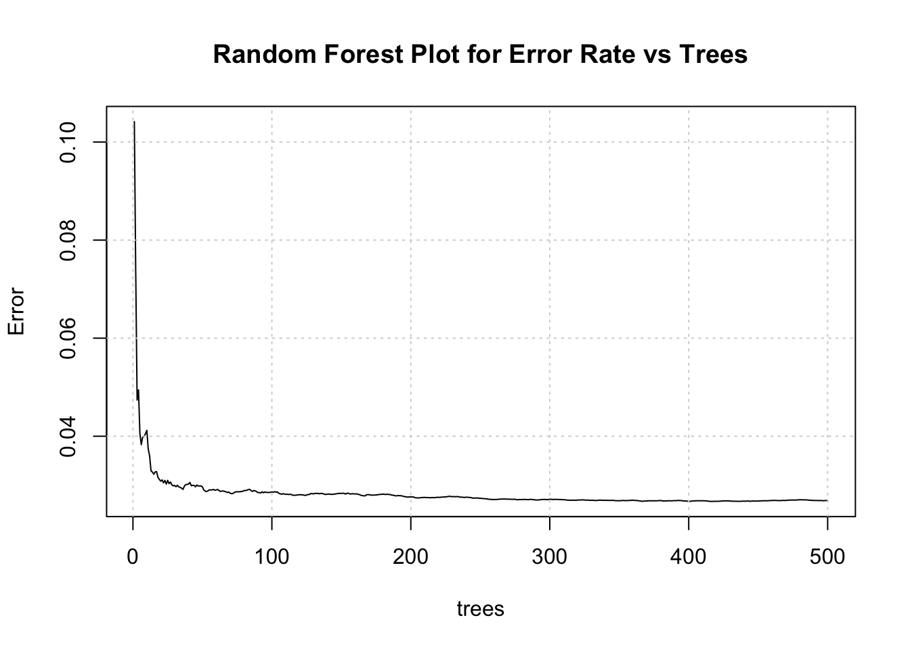
Taking a look a which variables were most important in the model.
plot(cancer_rf)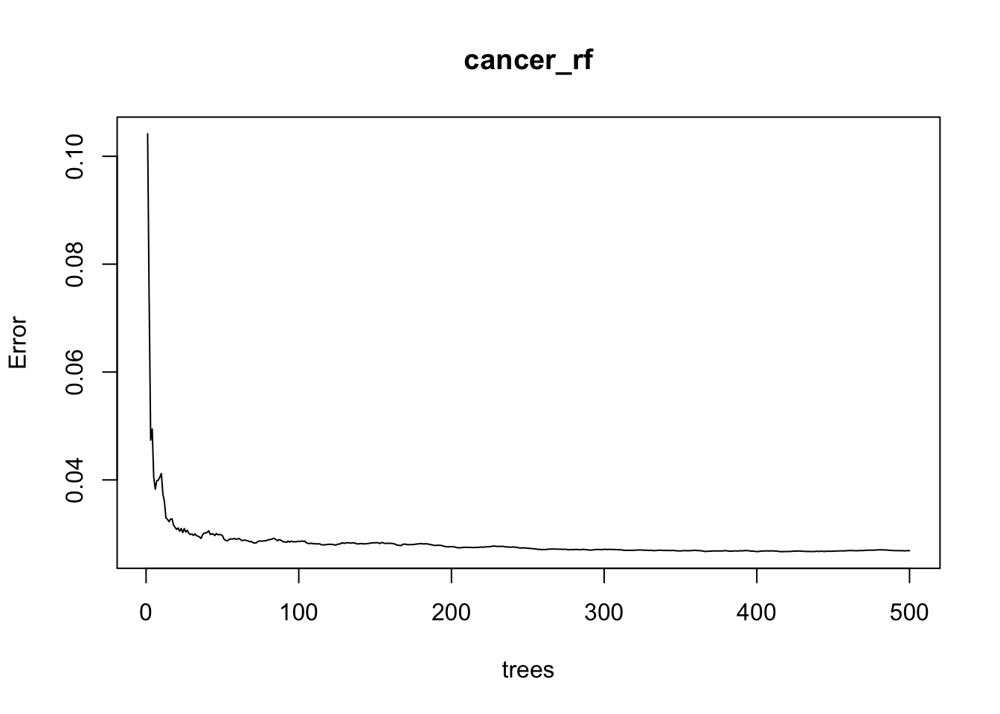
varImpPlot(cancer_rf, main = "Variable Importance Plots")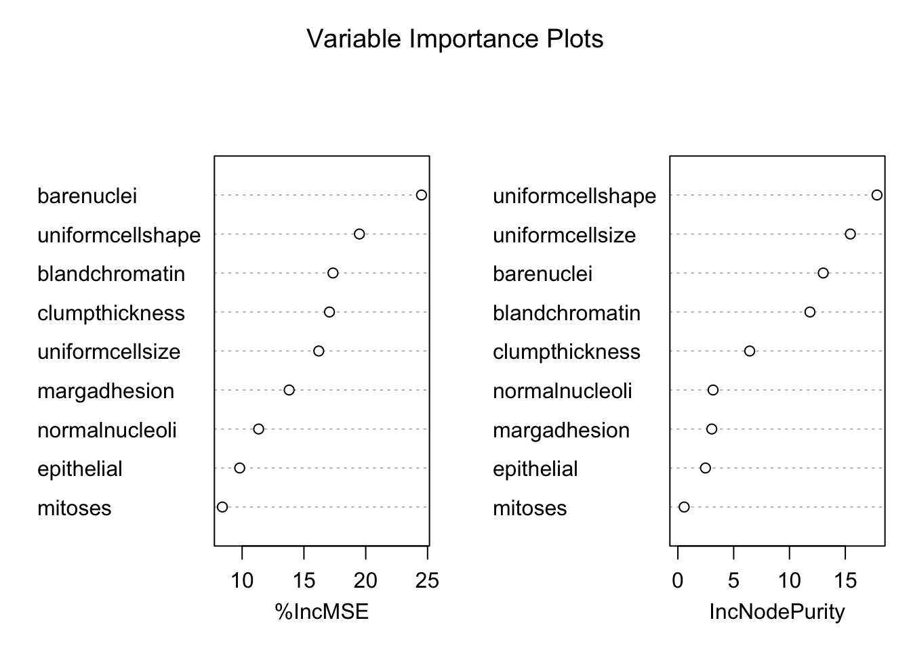
Looking at the confusion matrix:
glm.probs=predict(cancer_rf,df_clean,type="response")
glm.probs[1:10] 1 2 3 4 5
-6.231682e-16 7.668333e-01 -6.217249e-16 3.937667e-01 1.412692e-02
6 7 8 9 10
9.996000e-01 2.192000e-01 -6.310508e-16 1.061333e-01 7.692308e-05 glm.pred=rep(0,nrow(df_clean))
glm.pred[glm.probs>.5]=1
glm.pred=as.factor(glm.pred)
df_clean$benormal=as.factor(df_clean$benormal)
confusionMatrix(glm.pred,df_clean$benormal)Confusion Matrix and Statistics
Reference
Prediction 0 1
0 438 10
1 6 229
Accuracy : 0.9766
95% CI : (0.9622, 0.9866)
No Information Rate : 0.6501
P-Value [Acc > NIR] : <2e-16
Kappa : 0.9483
Mcnemar's Test P-Value : 0.4533
Sensitivity : 0.9865
Specificity : 0.9582
Pos Pred Value : 0.9777
Neg Pred Value : 0.9745
Prevalence : 0.6501
Detection Rate : 0.6413
Detection Prevalence : 0.6559
Balanced Accuracy : 0.9723
'Positive' Class : 0
The percent chance the model falsely predicted cancer when not was 6/444 (1.4%) and the chance the model falsely predicted not having cancer when there was 9/239 (3.7%).